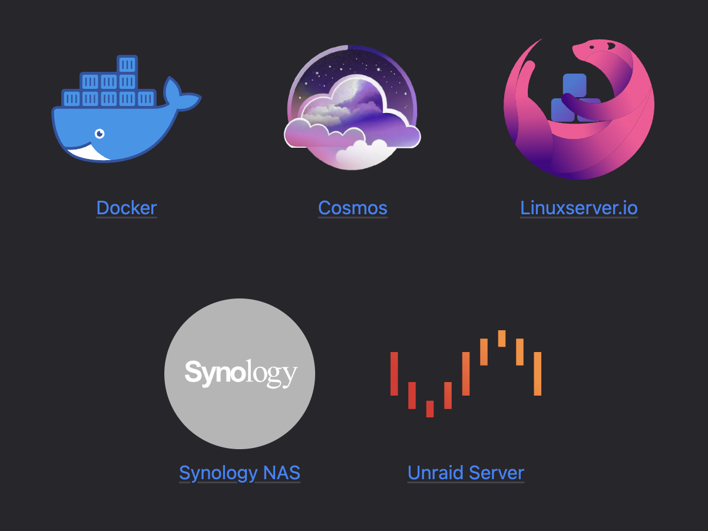

Fighting En💩tification with ActivityPub
James Smith // floppy.org.uk
@Floppy@mastodon.me.uk
Web 2.Oh Dear
Here is how platforms die: first, they are good to their users; then they abuse their users to make things better for their business customers; finally, they abuse those business customers to claw back all the value for themselves. Then, they die. I call this enshittification.- Cory Doctorow, 2023
Enter the Fediverse
The fediverse is a collection of community-owned, ad-free, decentralised, and privacy-centric social networks.- fediverse.to
Standards
- HTTP
- Atom/RSS
- Microformats
- ActivityPub
- Webfinger
- WebSub
- OAuth
- POSSE
- ...and more
Ownership
Self-funding - people will pay!
- OpenCollective
- Patreon
- Ko-Fi
- Liberapay
ActivityPub
 - activitypub.rocks
- activitypub.rocks
Content Types
application/ld+json; profile="https://www.w3.org/ns/activitystreams"
application/activity+json
Actors
https://mastodon.me.uk/users/Floppy
{
...
"id": "https://mastodon.me.uk/users/Floppy",
"type": "Person",
"following": "https://mastodon.me.uk/users/Floppy/following",
"followers": "https://mastodon.me.uk/users/Floppy/followers",
"inbox": "https://mastodon.me.uk/users/Floppy/inbox",
"outbox": "https://mastodon.me.uk/users/Floppy/outbox",
"featured": "https://mastodon.me.uk/users/Floppy/collections/featured",
"featuredTags": "https://mastodon.me.uk/users/Floppy/collections/tags",
"preferredUsername": "Floppy",
"name": "James Smith 💾",
"summary": "Generic humanoid carbon unit",
"url": "https://mastodon.me.uk/@Floppy",
...
}
ActivityStreams 2.0
www.w3.org/TR/activitystreams-core
Activity Vocabulary
Activities
https://mastodon.me.uk/users/Floppy/statuses/113293745221486905/activity
{
...
"id":"https://mastodon.me.uk/users/Floppy/statuses/113293745221486905/activity",
"type":"Create",
"actor":"https://mastodon.me.uk/users/Floppy",
"published":"2024-10-12T09:29:20Z",
...
"object":{
...
}
}
Activity Actions
- Follow
- Accept
- Create
- Delete
- Update
- Like
- Flag
- ... and so many more
Object
https://mastodon.me.uk/users/Floppy/statuses/113293745221486905
{
...
"id":"https://mastodon.me.uk/users/Floppy/statuses/113293745221486905",
"type":"Note",
"inReplyTo":null,
"published":"2024-10-12T09:29:20Z",
"url":"https://mastodon.me.uk/@Floppy/113293745221486905",
"attributedTo":"https://mastodon.me.uk/users/Floppy",
"content":"Yay, #OggCamp!
",
"attachment":[
{
"type":"Document",
"mediaType":"image/png",
"url":"https://mastodon.me.uk/system/media_attachments/files/113/293/742/234/978/459/original/f0503c918aab45f5.png",
"name":"A view from the audience in a conference room, with an OggCamp 2024 logo on screen",
...
}
]
}
Object Types
- Article
- Audio
- Document
- Event
- Image
- Note
- Profile
- Video
- ... and maybe your own?
Outbox
All public activities for a user.
Try it out!
Federation
Delivery & Inbox
Defined by to and cc fields
GET activities from outboxes
POST activities to relevant inboxes
Addressing
{
...
"to":[
"https://www.w3.org/ns/activitystreams#Public"
],
"cc":[
"https://mastodon.me.uk/users/Floppy/followers"
],
...
}
Addressing
- public: as:Public magic collection in to
- unlisted: as:Public magic collection in cc
- private: to/cc Follower collection, no as:Public
- limited: to/cc specific actors
- direct: to/cc specific actors, mentions in tag
From mastodon docs at docs.joinmastodon.org/spec/activitypub/#Mention
Security
https://mastodon.me.uk/users/Floppy
{
...
"publicKey": {
"id": "https://mastodon.me.uk/users/Floppy#main-key",
"owner": "https://mastodon.me.uk/users/Floppy",
"publicKeyPem": "-----BEGIN PUBLIC KEY----- MIIBIjANB...
...
...nQIDAQAB -----END PUBLIC KEY----- "
},
...
}
rsa_key = OpenSSL::PKey::RSA.new 2048
cipher = OpenSSL::Cipher.new('AES-128-CBC')
HTTP Signatures
https://docs.joinmastodon.org/spec/security
Signature:
keyId="https://my.example.com/actor#main-key",
headers="(request-target) host date digest",
signature="Y2FiYW...IxNGRiZDk4ZA=="
HTTP Signatures
https://docs.joinmastodon.org/spec/security
(request-target): post /users/username/inbox
host: mastodon.example
date: 18 Dec 2019 10:08:46 GMT
digest: sha-256=hcK0GZB1BM4R0eenYrj9clYBuyXs/lemt5iWRYmIX0A=
Verifying
https://docs.joinmastodon.org/spec/security
Signature:
keyId="https://my.example.com/actor#main-key",
headers="(request-target) host date digest",
signature="Y2FiYW...IxNGRiZDk4ZA=="
- Extract signature header
- Build the payload from the "headers" part and the received HTTP headers
- Get the key, and verify that the signature and payload match
Discovery
Webfinger
{server}/.well-known/webfinger?resource={uri}
application/jrd+json
acct: URIs
acct:floppy@mastodon.me.uk
Profile
https://mastodon.me.uk/.well-known/webfinger?resource=acct:floppy@mastodon.me.uk
{
"subject": "acct:Floppy@mastodon.me.uk",
"aliases": [
"https://mastodon.me.uk/@Floppy",
"https://mastodon.me.uk/users/Floppy"
],
"links": [
...
{
"rel": "self",
"type": "application/activity+json",
"href": "https://mastodon.me.uk/users/Floppy"
},
...
]
}
Remote Follow
https://mastodon.me.uk/.well-known/webfinger?resource=acct:floppy@mastodon.me.uk
{
"subject": "acct:Floppy@mastodon.me.uk",
...
"links": [
...
{
"rel": "http://ostatus.org/schema/1.0/subscribe",
"template": "https://.../authorize_interaction?uri={uri}"
}
...
]
}
Federails
Setup
bundle add federails
# config/routes.rb
mount Federails::Engine => '/'
rails generate federails:install
rails generate federails:install:migrations
Federails::Entity
# app/models/user.rb
class User < ApplicationRecord
# Include the concern here:
include Federails::Entity
# Configure field names
acts_as_federails_actor username_field: :username, name_field: :name,
profile_url_method: :user_url
end
Following
target = Federails::Actor.find_by_account "floppy@mastodon.me.uk"
user.actor.following_follows.create(target_actor: target)
Incoming requests:
class User < ApplicationModel
include Federails::Entity
after_follow :throw_party
end
Federails::Activity
Federails::Activity.create!(
actor: user.actor,
action: "Create",
entity: comment
)
Object Serialization
class Comment < ApplicationRecord
def to_activitypub_object
{
id: url_for(self),
type: "Note",
content: comment
published: created_at.iso8601,
to: ["https://www.w3.org/ns/activitystreams#Public"],
cc: [commenter.actor.followers_url]
}
end
end
Manyfold
Organising 3d print models
- Browse & Preview
- Organise & Tidy
- Troubleshoot & Convert
...a bit like having your own Thingiverse
Self Hosted Container
Oh no, it's live demo time
Thanks!
manyfold.app // @manyfold@3dp.chat
mastodon.me.uk // @Floppy@mastodon.me.uk